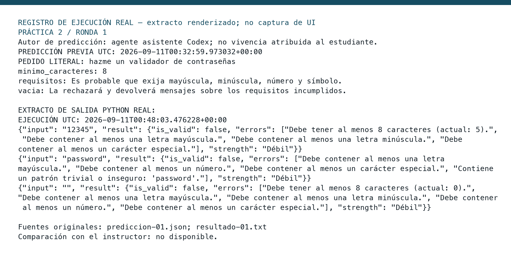

PRÁCTICA 2 / RONDA 1
Visor de evidencia conservada. La imagen es un registro renderizado de logs reales.

Fuente textual completa del registro
REGISTRO DE EJECUCIÓN REAL — extracto renderizado; no captura de UI
PRÁCTICA 2 / RONDA 1
Autor de predicción: agente asistente Codex; no vivencia atribuida al estudiante.
PREDICCIÓN PREVIA UTC: 2026-09-11T00:32:59.973032+00:00
PEDIDO LITERAL: hazme un validador de contraseñas
minimo_caracteres: 8
requisitos: Es probable que exija mayúscula, minúscula, número y símbolo.
vacia: La rechazará y devolverá mensajes sobre los requisitos incumplidos.
EXTRACTO DE SALIDA PYTHON REAL:
EJECUCIÓN UTC: 2026-09-11T00:48:03.476228+00:00
{"input": "12345", "result": {"is_valid": false, "errors": ["Debe tener al menos 8 caracteres (actual: 5).", "Debe contener al menos una letra mayúscula.", "Debe contener al menos una letra minúscula.", "Debe contener al menos un carácter especial."], "strength": "Débil"}}
{"input": "password", "result": {"is_valid": false, "errors": ["Debe contener al menos una letra mayúscula.", "Debe contener al menos un número.", "Debe contener al menos un carácter especial.", "Contiene un patrón trivial o inseguro: 'password'."], "strength": "Débil"}}
{"input": "", "result": {"is_valid": false, "errors": ["Debe tener al menos 8 caracteres (actual: 0).", "Debe contener al menos una letra mayúscula.", "Debe contener al menos una letra minúscula.", "Debe contener al menos un número.", "Debe contener al menos un carácter especial."], "strength": "Débil"}}
Fuentes originales: prediccion-01.json; resultado-01.txt
Comparación con el instructor: no disponible.